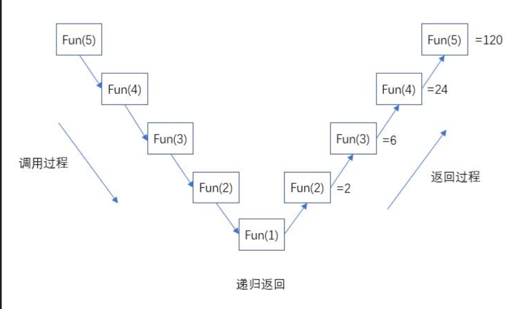
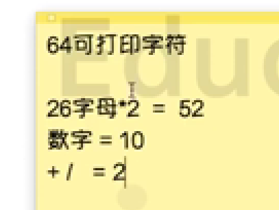

防抖
function debounce(fn, delay) {
let timer;
return function () {
let args = arguments;
let context = this;
if (timer) {
clearTimeout(timer);
}
timer = setTimeout(() => {
fn.apply(context, args);
}, delay);
};
}
var newHandler = debounce(function (e) {
console.log("用户有按键", e, this.value, "耗时操作");
}, 2000);
var inp = document.querySelector("input");
inp.addEventListener("input", newHandler);
decodeURIComponent 和 encodeURIComponent
decodeURIComponent()——对编码后的 URI 进行解码，参数为字符串
encodeURIComponent()——可把字符串作为 URI 组件进行编码，参数为字符串
atob 与 btoa
atob base64 转字符串 解码过程
btoa 字符串转 base64 编码过程
递归
在进行递归操作的时候，我们需要满足以下几个条件：
- 递归调用必须有结束条件
- 每次调用的时候都需要根据需求改变传递的参数内容
//阶乘递归
function factorial(x) {
if (x === 1) {
return 1;
} else {
return x * factorial(x - 1);
}
}
console.log(factorial(5)); // 120
===> factorial(5)
===> 5 * factorial(4)
===> 5 * (4 * factorial(3))
===> 5 * (4 * (3 * factorial(2)))
===> 5 * (4 * (3 * (2 * factorial(1))))
===> 5 * (4 * (3 * (2 * 1)))
===> 5 * (4 * (3 * 2))
===> 5 * (4 * 6)
===> 5 * 24
===> 120

使用递归时需要注意如下事项：
- 递归函数的优点是定义简单，逻辑清晰。理论上，所有的递归函数都可以用循环的方式来实现。
- 使用递归时需要注意防止栈溢出。在计算机中，函数调用是通过栈（_stack_）这种数据结构实现的，每当一个函数调用，栈就会加一层，每当函数返回，栈就会减一层。由于栈的大小不是无限的，所以递归调用的次数过多，会导致栈溢出。
小数精度问题
三个层面不精确
- 存储
- 运算
- 显示
存储
存储的时候比如存一个 0.3 由于转化为 2 进制数是一个无限的小数，计算机会对他进行截取，截取的位置不一样可能会导致偏大或者偏小
运算
存储不准一定会导致运算不准确
显示
显示的时候会做近似处理，浏览器会近似一个值比如。299999999999213 他就会认为是 0.3
第三方库 decimal.js 可以保证精确
原理：他会把值转换为字符串
在 JavaScript 中整数和浮点数都属于 number 数据类型，所有数字都是以 64 位浮点数形式储存，即便整数也是如此。 所以我们在打印 1.00 这样的浮点数的结果是 1 而非 1.00 。
该规范定义了浮点数的格式，对于 64 位的浮点数在内存中的表示，最高的 1 位是符号位，接着的 11 位是指数，剩下的 52 位为有效数字，具体如下：
- 符号位 S：第 1 位是正负数符号位（sign），0 代表正数，1 代表负数
- 指数位 E：中间的 11 位存储指数（exponent），用来表示次方数
- 尾数位 M：最后的 52 位是尾数（mantissa），储存小数部分，超出的部分自动进一舍零
也就是说，浮点数最终在运算的时候实际上是一个符合该标准的二进制数
符号位决定了一个数的正负，指数部分决定了数值的大小，小数部分决定了数值的精度。
IEEE 754 规定，有效数字第一位默认总是 1，不保存在 64 位浮点数之中。也就是说，有效数字总是 1.xx…xx 的形式，其中 xx…xx 的部分保存在 64 位浮点数之中，最长可能为 52 位。因此，JavaScript 提供的有效数字最长为 53 个二进制位（64 位浮点的后 52 位 + 有效数字第一位的 1）。
base64
可以将二进制数据，转化为 64 个可打印字符
也可以将如何数据转化成 base64
